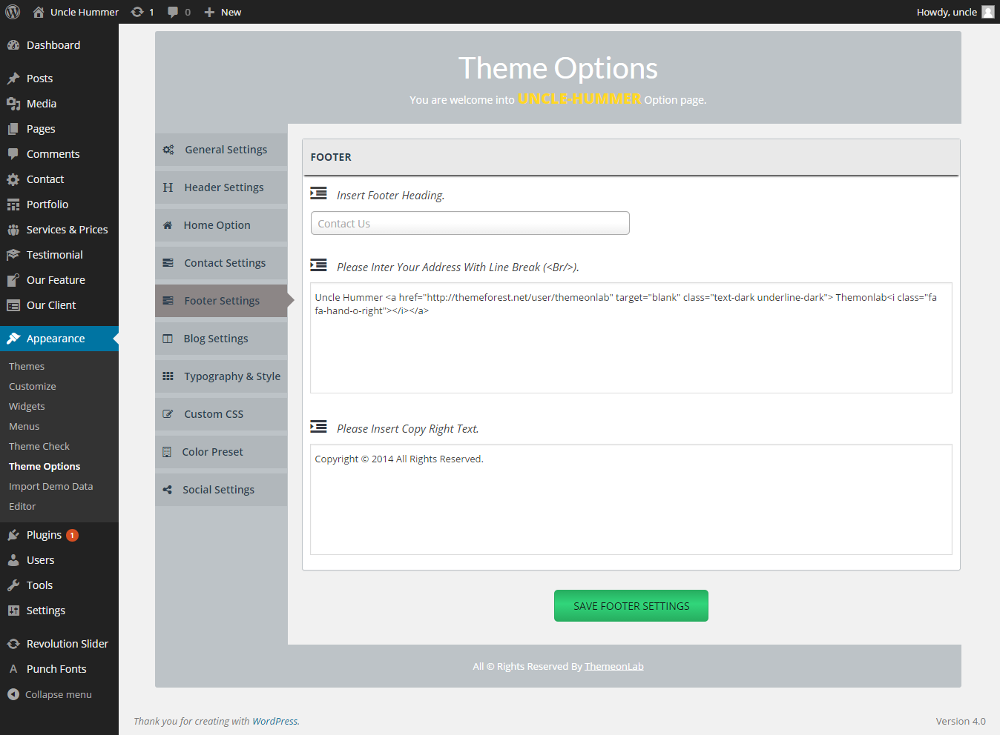

Uncle-Hummer Construction WordPress Theme
One Page Construction WordPress Theme
- created: 09/16/2014
- latest update: 09/17/2014
- by: ThemeonLab
- Uncle-Hummer
- email: support@themeonlab.com
Thank you for purchasing our theme. In case of any questions or doubts, do not hesitate to contact us via our Support Forum: http://themeonlab.com/support/ . We will do our best to solve any problem concerning the project. At the same time we invite you to visit often our profile on ThemeForest since there will be appearing the improvements of our project and the newest actualization.
INSTALLATION
Installing WordPress
Alternatively you may be interested on below topics:
- Things to Know Before You Begin Installing WordPress
- The Famous 5-Minute Installation
- Detailed Installation Instructions
- Common Installation Problems
- WordPress in Your Language
- Installing WordPress in Your Language
- How to Install Multiple Blogs
- How to Install on Your Own Computer
- Easy 5 Minute WordPress Installation on Windows
- How to Install with Amazon's Web Services (AWS)
- Getting Started with WordPress (much more installation info)
Please note that we do not give support or any questions related on how to install and maintain wordpress. For any faulty installation that may cause your website or our theme malfunction you should refer to wordpress support forum. Alternatively you can get help from your web hosting.
INSTALLATION Uncle-Hummer
Uncle-Hummer can be installed in two different ways:
- Installing through wordpress
- Uploading through FTP (File transfer protocol)
Installation through Wordpress:
Installing a theme through wordpress is quite a simple process. After you have logged into wordpress account and are ready to go, in the admin panel’s sidebar navigate to appearance and then select themes. After that, click on the install themes tab and select upload from the navigation bar right below it. Click “choose file” button and locate your theme zip file (uncle.zip) then hit install now. After ReOrder has been installed locate and click activate.
Please be informed that you should not upload the whole item you have downloaded from Themeforest as you will get an error of broken stylesheet file. Instead locate the uncle.zip file inside the main file you have downloaded.
While installing your theme through wordpress admin, you may encounter an error message saying “are sure you want to do this?”. This is mainly due to your hosting php settings. Reoder theme zip file is roughly around 6mb and in some hostings the default value for max_upload_limit left default which is 2mb. To solve this problem you should either increase your maximum upload size (to 10mb) on your hosting admin panel or ask your host to do it for you if you do not have the privilege to alter your server php settings. This is a very common request and they should be able to help you out. Once the limit is increased you can re-try the install and you’ll be all good to go.
Installing Uncle-Hummer From the WordPress Dashboard
- Download the zipped theme pack to your local computer from themeforest and extract the ZIP file contents to a folder on your local computer.
- Log into your WordPress admin panel and click on the “Appearance” tab.
- Now click on the "Add New Themes" tab.
- Click on the "Upload" button, "Browse" for file called "uncle.zip" In the extracted folder select "Open".
- Click the "Install Now" button.
- Activate the theme from this page, OR "Return to Themes Page" and activate from there
Uploading Uncle-Hummer via FTP to Wordpress
- Download the zipped theme pack to your local computer from themeforest and extract the ZIP file contents to a folder on your local computer.
- In the extracted folder you will find 'uncle.zip' Extract this file .
- Using an FTP client to access your host web server
- Upload the Theme files in the extracted folder called 'uncle' to wp-content/themes directoryprovided by WordPress.
- Visit Administration > Appearance > Themes, under the Manage Themes tab, under the Available Themes, if necessary navigate to the page displaying that Theme, then click the Activate link to make the Theme, the Current Theme.
Once you download Uncle-Hummer Theme, unzip the main item. you will see the following folders:
Updating Wordpress Theme
This theme may be updated periodically in order to add new features and fix bugs. When a new update be avilable an update message will appears on your blog dashboard . As a customer, you can download the most current version from your ThemeForest account.
Updating Manually
- Download the most current version from ThemeForest in the "Downloads" area of your account.
- Unzip the package and locate uncle.zip in the theme folder.
- Go to Appearance > Themes and activate another theme such as the default WordPress theme.
- Delete the Uncle-Hummer theme which is now inactive.
- Go to Install Themes > Upload then install and activate uncle.zip from the new package.
Installing Sample Content Data
One Click uploading XML file
- Login into your WordPress Admin section (http://www.your-web-site.com/wp-admin)
- Go to Appearance -> Import Demo Data in the site’s admin panels.
- Click on the it and you see a button name "Import Demo Data".
- Browse the included demoContent.xml (XML file) from main Zip Package > DummyContent.zip and Upload the XML file. you can import specifict post types. to get them check out "specific-contents" folder.
- Done! You should now have the dummy/demo content similar from the Live Preview of the theme.
Manually By uploading XML file
Below explanation is an step by step explanation on how to import our demo website content, please read carefully and if you face any problems that is not covered here, open a thread in our support forum.
- Login into your WordPress Admin section (http://www.your-web-site.com/wp-admin)
- Go to Tools -> Import in the blog’s admin panels.
- Click on the WordPress and follow the instructions if Import plugin isn’t installed yet (3.0+).
- Browse the included demoContent.xml (XML file) from main Zip Package > DummyContent.zip and Upload the XML file. you can import specifict post types. to get them check out "specific-contents" folder.
- You will first be asked to map the authors in this export file to users on the blog. For each author, you may choose to map to an existing user on the blog or to create a new user.
- please note in our dummy content none of the images will be downloaded because of copyright restrictions. You will need to add your images manually.
- WordPress will then import each of the posts, page, custom post types, comments, and categories contained in this file into your blog.
- Notice that the Sidebar and Footer Widgets are not replicated on your imported demo content. You should be the one to create the widgets. To create widgets, navigate to the left sidebar menu of the WordPress’ Dashboard, then Appearance > Widgets. Just drag and drop the widgets on to the widgets area on the right side of the widgets page.
- After this, you should also update the Menus by going to Appearance > Menus. Locate the Theme Locations box and select from the drop-down “Main Navigation” and "Footer Navigation" as respect to the locations the selectbox label indicates. Click the Save button under it to save the changes.
- Done! You should now have the dummy/demo content similar from the Live Preview of the theme.
Uploading Your Logo
Homepage Page Builder
Home Page Slider
If you had followed this tutorial from start to this point, your home page should be almost ready right now. The final step is to create an eye catching slider for your home page.
Setup Revolution Slider
ReOrder is packed with one of the best slider plugins on the net - Revolution. If you have installed Reorder properly, Revolution Slider should be installed already.
We have exported our demo slider configurations and it's included into the demo_content/revslider_docs folder in the main package. You can use it to quickly configure your slider.
To quickly start Revolution Slider, In the Admin Area's left menu, click on "Revolution Slider". Then:
Page Builder With Visual Composer
With Uncle - Hummer you can easily build your page using Visual COmposer and RMS-shortcode. To do this:

If you face any problem to see RMS shortcode in Visual Composer, Don't worry here is the alternative way to use :
Theme-Option

WPML-Configure
To configure WPML you will have to extract plugins file And again extract wpml_cms_package. Then take your necessary staffs
For anything help visit WPML Documenter
Included Files Uncle-Hummer
- Revolution Slider
- WPML
- Visual Composer
- Isotop
- RMS Framework
- Google Font
- Font Awesome
- 1 Click XML Importer
- Build-in Short-Code
- RMS Theme Option